Годините · хрониката на мандата2016 — Годината на новите домове
Капана се напълни, ЮНЕСКО каза „да“, а екипът се снима за Коледа.
Трите акцента на годината · подбрани на ръка
Кварталът се напълни и не се изпразни повече.
подробностите — на мястото им →Единственият български град в мрежата на учещите се градове.
подробностите — на мястото им →Отделите, екип по екип, за четири минути.
подробностите — на мястото им →Хрониката на годината
месец по месец · 29 записа: 0 албума · 16 събития от вестника и 13 броя 8 стр. · чети
8 стр. · четиДва проекта в Пловдив по програма „Красива България“ · Градът разкрива съвременното си богатство · Пловдив видя Вроцлав и Сан Себастиян като Европейски столици на културата – всички заедно
кликни — броят се отваря в четеца · всички броеве са в секция „Вестникът“ → 8 стр. · чети
8 стр. · четиВелоалеи в реката – мащабен проект за коритото на Марица · Европа е чудесна, а Пловдив е в центъра на подиума · Транспортният проект променя Пловдив
кликни — броят се отваря в четеца · всички броеве са в секция „Вестникът“ →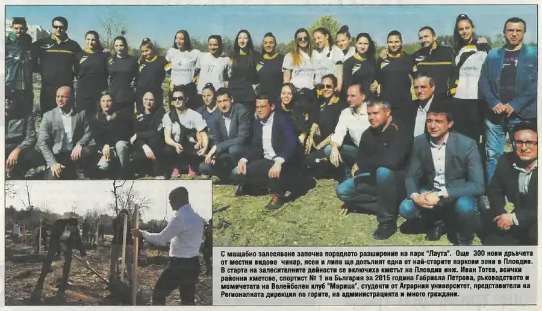
стр. 1С мащабно залесяване започна поредното разширение на парк „Лаута“ – още 300 нови дръвчета от местни видове чинар, ясен и липа. В акцията се включиха кметът Иван Тотев, районните кметове, спортист №1 на България за 2015 г. Габриела Петрова и момичетата от волейболен клуб „Марица“.
брой 11 · стр. 1 — отвори страницата →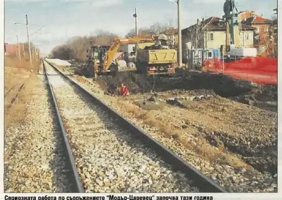
стр. 4Стартира дългоочакваната работа по съоръжението „Модър-Царевец“ под високоскоростната железопътна линия – пълна промяна на връзката между „Руски“ и „В. Априлов“. Бъдещият подлез ще продължи с четири ленти пътя от бул. „Хаджи Димитър“ до бул. „Свобода“, а сериозната работа по обекта започва още тази година.
брой 11 · стр. 4 — отвори страницата → 8 стр. · чети
8 стр. · четиДигитализират 50 000 културни експонати на Пловдив · Пловдивчанинът Тед Кочев: Градът е неузнаваем · Спортът заема важно място в живота на Пловдив
кликни — броят се отваря в четеца · всички броеве са в секция „Вестникът“ →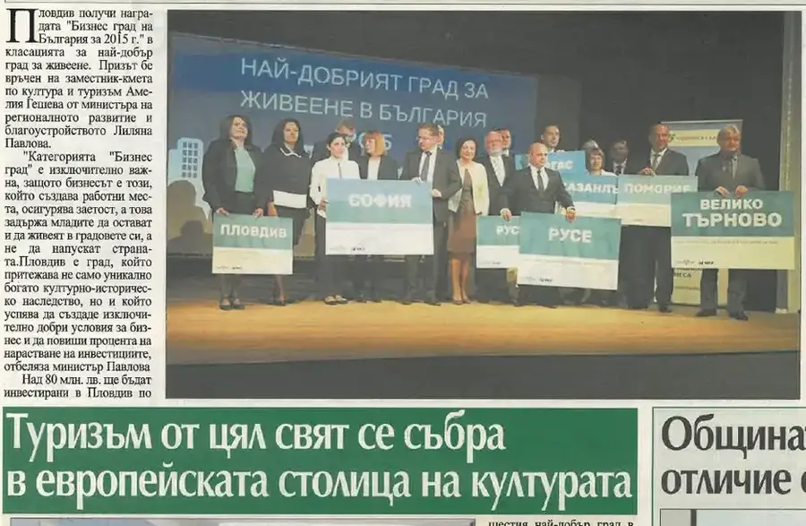
стр. 3Градът получи наградата „Бизнес град на България за 2015 г.“ в класацията за най-добър град за живеене. Призът бе връчен на заместник-кмета по култура и туризъм Амелия Гешева от министъра на регионалното развитие и благоустройството Лиляна Павлова.
брой 12 · стр. 3 — отвори страницата →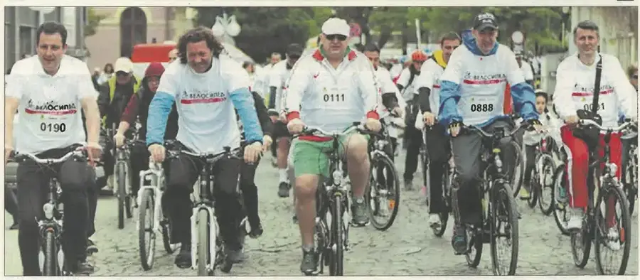
стр. 5Министърът на младежта и спорта Красен Кралев и кметът Иван Тотев поведоха повече от 1000 пловдивчани във велошествие, част от кампанията „Аз карам велосипед, последвай ме“. Сред участниците бяха олимпийските шампиони Николай Бухалов и Асен Златев, а кметът обяви, че се изграждат още 15 км велоалеи.
брой 12 · стр. 5 — отвори страницата → 8 стр. · чети
8 стр. · четиГаражните клетки се махат за 11 000 паркоместа – по-доброто решение · Пловдив е бизнес град на България · В Пловдив изграждаме уникални за страната зони за спорт
кликни — броят се отваря в четеца · всички броеве са в секция „Вестникът“ → 8 стр. · чети
8 стр. · четиВърви, народе възродени! · Обучение „Монтесори“ влиза в пет детски градини · Инвеститорите вече сами водят нови компании в града
кликни — броят се отваря в четеца · всички броеве са в секция „Вестникът“ →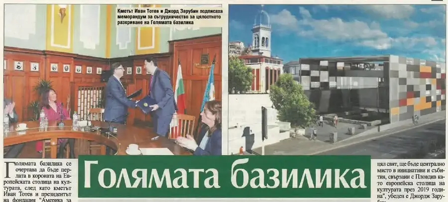
стр. 8Кметът Иван Тотев и президентът на фондация „Америка за България“ Джордж Зарубин подписаха меморандум за сътрудничество за реставрацията на Епископската базилика. Проектът включва пълното разкриване на Голямата базилика с всичките и мозайки и създаване на ново площадно пространство, което ще заеме централно място в програмата на Пловдив като Европейска столица на културата 2019.
брой 13 · стр. 8 · и в брой 20 — отвори страницата →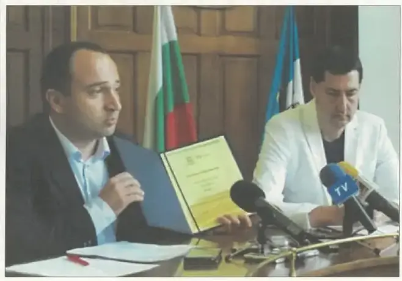
стр. 1Пловдив стана първият български град, приет в международната образователна мрежа на ЮНЕСКО – Global Network of Learning Cities. В мрежата членуват 35 града от 20 държави, а програмата цели да обедини над 1000 града от целия свят в подкрепа на образователния процес.
брой 14 · стр. 1 · и в брой 15 — отвори страницата →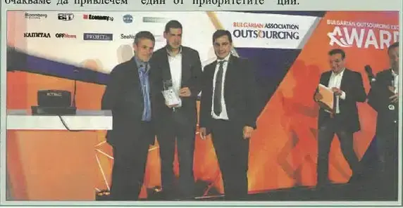
стр. 3Първите годишни награди на Българската аутсорсинг асоциация донесоха нов триумф на Пловдив – градът бе обявен за „Аутсорсинг град на годината“. Отличието получи кметът Иван Тотев. В момента в града работят над 30 компании с над 3000 заети в сектора.
брой 14 · стр. 3 — отвори страницата →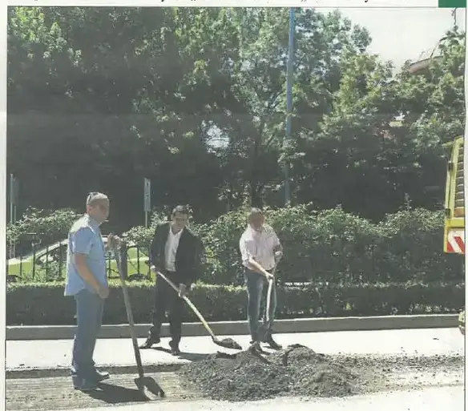
стр. 5Кметът Иван Тотев даде старт на втория етап от реконструкцията на „Асеновградско шосе“. Източното и западното платно ще бъдат последователно преасфалтирани до разклона за Околовръстното. Готово е и северното платно на бул. „Княгиня Мария Луиза“ от черквата „Света Петка“ до кръстовището с бул. „Източен“.
брой 14 · стр. 5 · и в брой 15 — отвори страницата →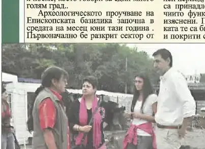
стр. 4В средата на юни стартира археологическото проучване на Голямата (Епископската) базилика на Филипопол. Разкопките разкриват архитектурни елементи, мраморни колони, капители и мозаечни подове от най-големия раннохристиянски храм по българските земи.
брой 16 · стр. 4 — отвори страницата → 8 стр. · чети
8 стр. · четиПловдив повежда в утвърждаването на „Иновативни училища“ · Ударно обновяват булеварди и пътища в Пловдив · Цвети Пиронкова: Виждам как нашият град разцъфва
кликни — броят се отваря в четеца · всички броеве са в секция „Вестникът“ →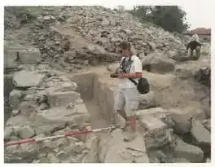
стр. 3Северната част на крепостта на Небет тепе стана обект на проучванията на археолозите при разкопките на хълма. Екип с ръководител София Христова работи във вододайната зона на крепостта, където бяха открити гробове от Средновековието, мраморна колона, ценни монети и оброчна плочка, вероятно с изображение на божеството Митра.
Марица ГРАДЪТ · февруари 2017 · стр. 3 · и в брой 16 — отвори страницата →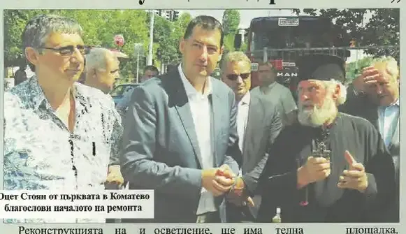
стр. 1Започна реконструкцията на „Коматевско шосе“ – най-важният общински инфраструктурен обект в момента, като отец Стоян от църквата в Коматево благослови началото на ремонта. На мястото на паважната улица се изгражда модерен асфалтов път с велоалеи, тротоари, осветление и нова канализационна система.
брой 15 · стр. 1 — отвори страницата → 8 стр. · чети
8 стр. · четиЦентър за биотехнологии в града – 70 млн. за наука · Летящ старт на Есенния салон на изкуствата · ЮНЕСКО представя Пловдив: Това е учещ град!
кликни — броят се отваря в четеца · всички броеве са в секция „Вестникът“ →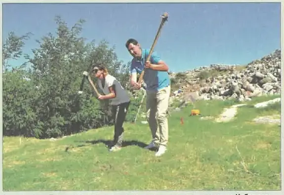
стр. 8Кметът Иван Тотев даде старт на новите археологически проучвания на Небет тепе, които трябва да изяснят какво крие хълмът и как той да се превърне в емблема на Пловдив. Работата се води от директора на Археологическия музей доц. Костадин Кисьов с професионален екип археолози.
брой 16 · стр. 8 — отвори страницата → 8 стр. · чети
8 стр. · четиОще четири градини стават по-топли и уютни · Пловдив търпи драматична промяна, на почит е културното наследство · Само на 10, но със злато от световна олимпиада
кликни — броят се отваря в четеца · всички броеве са в секция „Вестникът“ → 8 стр. · чети
8 стр. · четиС образователен индустриален борд бизнесът „осиновява“ паралелки · Нов дом за 1500 IT специалисти · Президентът Плевнелиев: Този град е съкровище под открито небе!
кликни — броят се отваря в четеца · всички броеве са в секция „Вестникът“ →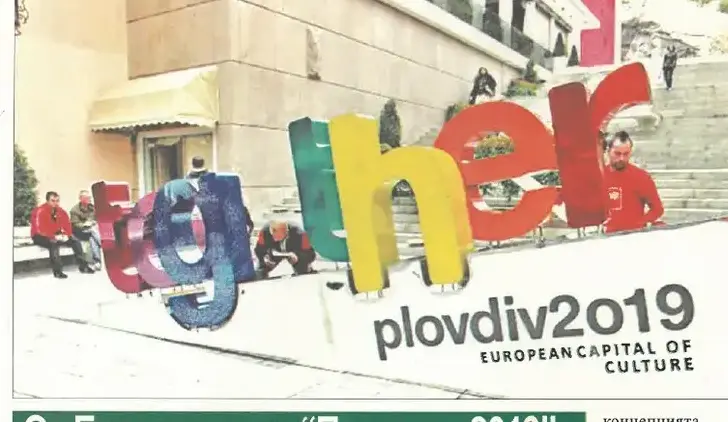
стр. 3На първия официален мониторинг пред Европейската комисия кметът Иван Тотев и зам.-кметът Стефан Стоянов представиха постигнатото и цялостната стратегия за развитие на Пловдив като Европейска столица на културата. Журито поздрави града за напредъка след тричасов разпит и изготви доклад с конкретни препоръки.
брой 18 · стр. 3 — отвори страницата →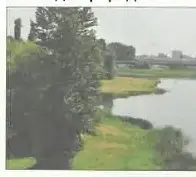
стр. 5Кметът Иван Тотев подписа с фирма „Project planning management“ единствения по рода си договор за социализиране на речното корито на Марица в урбанизираната територия. Проектът включва 10 километра от коритото от Гребната база до Бента и предвижда ново публично пространство за спорт и разходка близо до природата.
брой 18 · стр. 5 — отвори страницата → 8 стр. · чети
8 стр. · чети„Монтесори Пловдив“ с признание в Европа · Градът се развива · Поздравления, на прав път сте!
кликни — броят се отваря в четеца · всички броеве са в секция „Вестникът“ →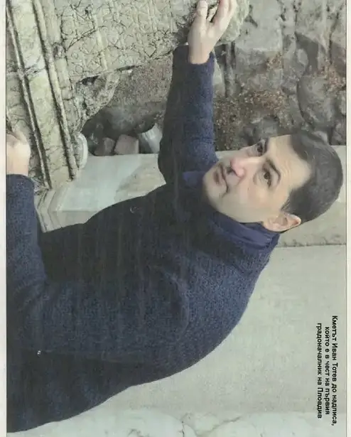
стр. 4При реставрационните работи в Античния театър бе открит надпис върху колона, който разкри името на Тит Флавий Котис – първия известен градоначалник на Пловдив, потомък на тракийските царе. Откритието на археолозите Мая Мартинова и Николай Шаранков доказва, че Античният театър е по-стар с около 30 години и че Пловдив е станал столица на римската провинция Тракия още през I век – със световно значение за науката.
брой 19 · стр. 4 — отвори страницата → 8 стр. · чети
8 стр. · чети„Гладстон“ и „Захари Стоянов“ чисто нови · Градът промени съдбата си пред очите ни · Илия Динков: Колодрума е страхотно спортно съоръжение
кликни — броят се отваря в четеца · всички броеве са в секция „Вестникът“ → 8 стр. · чети
8 стр. · четиСлед големите ремонти · Близо 90 млн. лева са инвестирани в пътищата в Пловдив за 5 години
кликни — броят се отваря в четеца · всички броеве са в секция „Вестникът“ →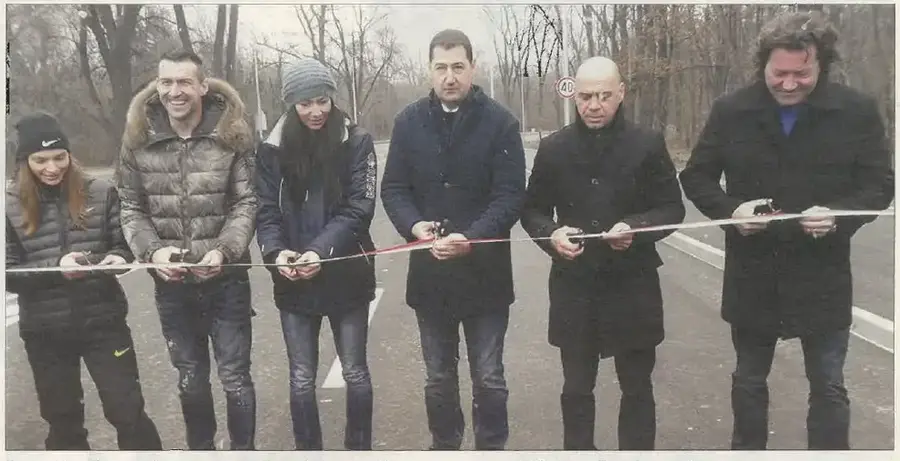
стр. 1Кметът Иван Тотев, районният кмет Костадин Димитров и спортни емблеми на Пловдив – сред тях олимпийският шампион Николай Бухалов и лекоатлетката Габриела Петрова – откриха новия път „Проф. Цветан Лазаров“. Четирилентовото трасе с изцяло нова подземна инфраструктура, LED осветление и велоалеи осигурява най-пряката връзка на най-младия район с центъра – проект, чакан от 1974 година.
брой 20 · стр. 1 — отвори страницата → 8 стр. · чети
8 стр. · четиНова улица свърза „Тракия“ с центъра · Изпращаме успешна година – 30 милиона лева за нови улици · Връщат блясъка на уникалната баня
кликни — броят се отваря в четеца · всички броеве са в секция „Вестникът“ →